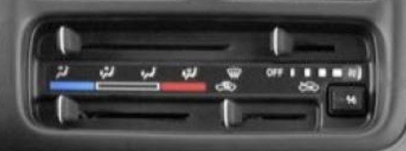

What is this? It's an old fashioned blog of sorts written in plain HTML
CSS, and JavaScript. But why not more tech? I think I'm too young to be
old and grumpy about tech. On the other hand maybe not. I like
repairable things, Vim,
and internet free appliances. Also I think this is the peak of HVAC
control design for vehicles.
